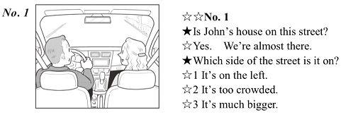

1. 英検5級についてのご紹介
まずは英検5級の概要についてご紹介していきます。
英検5級に合格するには、目安として中学初級程度の英語知識が必要になります。英検5級で証明できる英語レベルは「初歩的な英語」。つまり、英語を習い始めたばかりの方に最適な級です。
基礎英語や家族、趣味、スポーツなど、身近で簡単なテーマが出題されるため、比較的合格率は高めの級になっています。

英検とは。英検の概要や英検の形についてのご紹介
近年、英語という言語は世界共通語として進学や就職において重要視されるようになってきました。その際に英語力を証明するのに役立つのが英検です。
英検はレベル別に試験を受けることが出来るため、自分の英語力に合わせて少しずつレベルアップしていくことができるのがメリット。
今回は、そんな英検の各級の完全ガイドとして、試験の内容や効率的な勉強方法まで詳しく解説していきます。
この記事を参考に少しずつ英語力をアップさせていきましょう！ まずは初級編である英検5級について下記の通り詳しく解説していきます。
まずは英検5級の概要についてご紹介していきます。
英検5級に合格するには、目安として中学初級程度の英語知識が必要になります。英検5級で証明できる英語レベルは「初歩的な英語」。つまり、英語を習い始めたばかりの方に最適な級です。
基礎英語や家族、趣味、スポーツなど、身近で簡単なテーマが出題されるため、比較的合格率は高めの級になっています。
英検5級を合格するためのラインは、60%以上。英語に触れたばかりの方を対象とした試験のため、合格ラインも比較的易しく設定されています。
リーディングとリスニングがそれぞれ425点満点、2技能の合計得点は850点です。合格ラインは419点だと言われていますが、単純に全体の49%に正解したからと言って合格できるわけではありません。
各試験の難易度に違いが出ないよう、英検では受験者の回答を比較することでスコアを計算するいわゆる「統計的手法」が使われます
統計的手法とは、各試験における受験者の正答によって、難易度が異なる結果を比較できる理論のこと。つまり、単純な正答数がスコアになるわけではないのです。
このことから、英検5級では確実に合格ラインとなるのは60%以上の正答率であると言われています。もっと詳しく言うと、筆記、リスニングそれぞれで15問以上の正答数が必要になります。
それでは、英検5級ではどのような問題が出題されるのか、詳しく見ていきましょう。
大問1（15問）短い文の空欄の問題
短い英文をや会話文を呼んで、（ ）に入れるのに最も適切なものを4つの選択肢から1つ選ぶ問題が出題されます。
近年の傾向としては、単語は約7問、熟語が約5問、文法が約3問ほど出題されていることが多いです。
15問を約10分で完了することを目標にしましょう。目安としては、各問題につき約40秒で答えるイメージです。

英検５級 筆記試験 大問1
大問2（5問）会話文の空欄の問題
短い対話を読んで、（ ）に入れるのに最も適切な選択肢を選ぶ問題です。4つの選択肢が用意されています。
主に、日常生活や家族、学校、街の周りの場面での対話が多く出題される傾向にあります。大問2では、Wh-とHowの疑問詞の知識が必要に。疑問詞を見分けることができれば、適切な応答を推測できます。
たとえば、「Where」の疑問詞がある場合、意味は「どこ」になるので、応答文には「at the park」や「over there」など、つまり、「場所」を意味する単語が入っていると考えられますね。
5問を約5分で完了することを目標にしましょう。目安としては、各問題に約1分です。

英検５級 筆記試験 大問3
大問3（5問）並べ替えの問題
日本文の意味を表すように、英単語を並べ替える問題です。1番目と3番目にくる単語の最も適切な組み合わせを4つの選択肢から選びます。
注意しなくてはならないのは、文の始めにくる単語も、小文字になっていること。
現在形なのか、命令形なのかを見分ける知識が必要になります。また、代名詞の主格を識別できるように練習しておきましょう。例えば、「he」と「his」はそれぞれ、「彼は」と「彼の（もの）」になりますね。
5問を約8分で完了することを目標にしましょう。目安は、各問題に約90秒です
英検５級 筆記試験 大問1
第1部（10問）会話に合う応答文
絵を参考にして、英文と応答を聞き、会話に最も合う応答を選ぶ問題です。３つの選択肢があります。
会話、応答の選択肢はどちらも音声のみで、問題冊子には、絵だけが載せられています。
会話と応答は2回放送されるので、1回目に上手く聞き取れなかったとしても、2回目でしっかり聞き取れるよう、耳を英語に慣らしておくといいですね。
第2部（5問）会話について質問
会話と質問を聞いて4つの選択肢の中から最も適切な回答を選ぶ問題です。会話と質問どちらも音声のみで、問題冊子には選択肢だけが載っています。
第1部と同様、会話と質問は2回繰り返されます。

英検５級 リスニング試験 第1部
第３部（10問）絵について英文
3つの発話を聞いて、絵に最も適切な回答を選ぶ問題です。選択肢は音声のみで、問題冊子には絵だけが載っています。
問題文は2回放送されます
英検5級を攻略するには、動詞、名詞、形容詞、副詞を識別できるようになる必要があります。 また、現在形、現在進行形、命令形などの基本概念の知識も必要です。
これはほんの一例ですが、複数の場合に名詞につけるのは「s」なのか「es」なのかを見分けたり、単数の３人称「He・She・It」の場合、動詞に「s」か「es」を追加するルールなど。英語の基本的なルールをしっかり身に付けておきましょう。
出題される話題については、家族、趣味、スポーツなど日常生活に関する出題が多いです。効率的な勉強法としては、身近な話題を簡単な英作文にする練習をしておくと良いでしょう。繰り返し練習すれば自然と、基本的な文法や簡単な語彙が身に付くはずです。
英検5級では、中学初級段階の英語力が必要になります。合格ラインは60%前後を目指しましょう。
英語を習い始めた方に最適な試験です。主語や動詞、形容詞、名詞などの特徴や使い方を意識しながら出題のパターンを見つけ、それに応じて回答すると良いですよ。
合格、頑張ってください！
次に、英検4級について下記の通り詳しく解説していきます。
英検４級についてのご紹介
英検４級の合格ライン
出題の内訳
英検4級では、中学中級程度の英語力が推奨目安とされています。検5級が「初歩的な英語」だったのに対し、4級は「簡単な英語」レベルです。
出題形式や内容がより実用的なものとなり、読解問題が加わってきます。基礎力と身近な話題に関する英語力を伸ばしていくことができる級です。
英検5級に比べ、必要となる英語レベルが少し高くなりますので、語彙や基本的な文法をしっかり見直し、ケアレスミスを減らしていかなくてはなりません。
英検4級は、リーディングとリスニングがそれぞれ500点満点、合計1,000点で構成されています。
合格ラインは622点くらいだと言われていますが、英検5級と同様、統計的手法に基づき算出されるため、単純に正答数だけでは合格できるとは限りません。
日本英語検定協会による2016年度第一回では、「各技能6割程度の正答率の受験者の多くが合格している」と言われているので、合格ラインは60%程度。ただし、余裕をもって70%前後を目指しておくとより安心です。筆記、リスニングの合計で39問以上の正答数を目指しましょう。
ちなみに近年では、英検４級の合格率は65～70％程度と言われています。
大問１（１５問）短い文の空欄の問題
短い英文や会話を読んで、（ ）に入れるのに最も適切なものを４つの選択肢から１つ選ぶ問題です。
最近の傾向としては、主に単語と熟語がそれぞれ7問と5問、文法に関連する問題が約9問程度出題されている場合が多いです。
もっと詳しく言うと、代名詞、時制、不定詞、動名詞、疑問文と否定文の作り方、主語に応じた動詞の変化の仕方が出題される傾向にあります。
15問を約10分で終わらせられるようにしましょう。目安は各問題に約40秒程度です。
大問２（５問）会話文の空欄の問題
短い対話を読んで、（ ）に入れるのに最も適切な選択肢を選ぶ問題です。４つの選択肢があります。
Wh-とHowで始まる疑問文や、「Please」や「Don’t」で始まる文命令文が多い傾向に。5級に比べてより実用的な内容が出題されるので、文の構造は長くなり、接続詞が含まれる場合も。5級と同じくA、Bの対話パターンがほとんどですが、A、B、Aのパターンもあります。
5問を約5分で完了することを目指しましょう。つまり、各問題に約1分ほどが目安です。
大問３（５問）並べ替えの問題
日本文の意味を表すように、英単語を並べ替える問題です。２番目と４番目にくる英単語の最も適切な組み合わせを４つの選択肢から選びます。注意しないといけない点は、5級同様、文に始めにくる単語も小文字になっていること。多くの場合、肯定文と疑問文がそれぞれ２問、命令形が１問あります。
時制として、現在進行、過去に加えて、未来の表すgoing to〜・will、過去進行 was 〜ingを理解できるようにしておきましょう。また、熟語および、動名詞 〜ing、例えば good at 〜ing、practice 〜ingも出題されます。
5問を約8分で完了することを目指しましょう。目安は、各問題に約90秒です。
大問４（１０問）提示・メール・長文を読んで、質問を答える問題
「提示」、「メール」、「長文」の３種類の英文に関する質問を答える問題です。英文を読む前に、まず質問に目を通して、何を読み取らないといけないかを理解できるようにしておきましょう。
英文が正解文とは異なる表現になっている場合に注意が必要になります。
10問を約15分で完了することを目指しましょう。目安としては、各問題に約90秒です。
第１部（10問）会話に合う応答文
絵を参考して、英文と応答を聞き、会話に最も合う回答を選ぶ問題です。３つの選択肢があります。
会話・応答の選択肢どちらも音声のみです。問題冊子には絵だけが載せてられています。
会話・応答の選択肢とも2回放送されます。
第２部（10問）会話について質問
問題冊子からの選択肢の見本と原稿からの会話の見本
会話と質問を聞き、最も適切な答えを選ぶ問題です。4つの選択肢があります。会話と質問はともに音声のみで、問題冊子には選択肢だけが載っています。
会話と質問の放送はどちらとも２回です。
第３部（10問）短い英文について質問
英文と質問を聞き、最も適切な答えを選ぶ問題です。答えは４つの選択肢から選びます。会話と質問はどちらも音声のみで、問題冊子には選択肢だけが載っています。
会話と質問は２回を放送され、趣味、旅行、レストランやお買い物、日常の習慣などの話題がよく出題される傾向に。
多くの質問は詳細を聞き取りできるかどうかを測定するものです。例えば、「ケイトは先週の土曜日に何をしましたか？」、「女の人は息子に何をあげますか？」、「トシは黄色い魚が何匹を飼っていますか？」など。
または、一部の質問は文脈や場面を理解する能力を測定することも。例えば、「誰が話しているの？」、「会話はどこで行われていますか？」などです。
4級では、550～650語程度の語彙が必要になります。
時制として、過去、過去進行 was〜ing、未来のwill・be going toが理解できるよう、チェックしておきましょう。
動名詞〜ing 、不定詞 to doや、助動詞 must・have to・would・shouldなど、また、比較の表現、接続詞 and・but・or・because・when・before・afterなど の理解力と使い方に関する理解が必要になります。
それぞれの文法を用いた英作文を練習することで、使い方とルールをしっかり身に付けておくと良いでしょう。
英検4級では、中学中級段階の英語力が必要になります。４級の合格ラインは60％程度と言われていますが、70%くらいを目標にしておくとより安心です。
５級で学んだ英語の基礎は段々使えるようになってきているはず。その知識をより実用的な出題形式で使ってみましょう。
合格、頑張ってください！
次に、英検3級について下記の通り詳しく解説していきます。
英検３級についてのご紹介
英検３級の合格ライン
出題の内訳
英検3級では、中学卒業程度の「身近な英語レベル」が推奨目安となっています。
4級までで培った英語の基礎をより実践的に、英語で自分の考えをスムーズに伝えられるようにしておく必要があります。
筆記試験の題材の視野がさらに広がり、もう少し詳しく言えば、例えば海外の文化にまで触れてくる内容などです。
4級までとの違いは、ライティングの試験が加わること。より実践的な英語力が必要となってきます。
二次試験にはスピーキングテストがありますので、先述したとおり英語で自分の考えをスムーズに伝えられるようにしておきましょう。
英検3級では、いわゆる4技能とよばれる、リーディング・ライティング・リスニング・スピーキングがそれぞれ550点満点で、合計スコアの満点は2200点になります。また、一次試験を合格すると二次試験のスピーキングテストを受験することができるようになります。
一次試験の合格ラインは1103点。ただし、英検4級までと同様、「統計的手法」に基づいて算出されるため、3級でも単純に正答の数で合格できるわけではありません。
日本英語検定協会による、2016年度第1回では、「各技能6割程度の正答率の受験者の多くが合格されている」とされているので、３級の合格ラインは60％以上。ただし、4級同様70%以上を目指したほうがより安心です。リーディング・リスニングの合計で45問以上正解を目指すと良いでしょう。
目安として、2015年の英検3級の合格率は50％程度です。
大問１（１５問）短い文の空欄の問題
短い英文や会話を読んで、（ ）に入れるのに最も適切なものを４つの選択肢から１つ選ぶ問題。
最近の傾向としては、単語と熟語・表現、それぞれが６問ずつ出題されている場合が多いです。
また、最後の３問（問13〜問15）では、文法に関連する問題が出題される傾向にあります。よく出る文法の出題は、主語の応じた動詞の変化、不定詞 to 〜、比較の表現 -er・-est、関係代名詞 who・that、受け身形 （例 are spoken） を含む問題です。
15問を約8分で完了することを目指しましょう。各問題に約30秒で答えるのが目安です。
大問２（５問）会話文の空欄の問題
短い対話を読んで、（ ）に入れるのに最も適切な選択肢を選ぶ問題です。４つの選択肢があります。
主に親しい人同士の会話や、店員と客の会話が出題されることが多いです。例えば、夫婦や兄弟、友だち、同僚など。
対話はA・Bのパターン、もしくはA・B・Aのパターンで出題されます。
5問を約3分で完了することを目指しましょう。つまり、各問題に約40秒くらいが目安です。
大問３（１０問）提示・メール・長文を読んで、質問を答える問題
「提示」、「メール」、「長文」の３種類の英文に関する質問に答える問題です。
3Aはお知らせの文章、3Bはメールまたは手紙のやり取り、3Cは長文になります。3Cでは、人・イベント・場所・商品・食べ物などの歴史について話題が題材される場合が多い傾向にあります。
英文を読む前に質問に目を通して、英文では読み取らないといけない点を理解できるようにしておきましょう。
英文が正解文とは異なる表現になっている場合に注意しましょう。
10問を約20分で完了することを目指しましょう。各問題に約2分ずつが目安です
大問４ ライティング
ライティングとは、QUESTIONについて、自分の考えとその理由を2つの英文で書く問題です。4級までは出題されないので、3級を受ける前にしっかり対策をしておく必要があります。解答の単語数の目安は25語〜35語です。
前提として、自分の意見について質問をする外国人の友達がいて、それに英語で回答をする必要があります。
問題文にあるとおり、QUESTION に対応していない回答の場合は0点と採点されることがあるので、QUESTIONをよく読んで理解しましょう。
よく出題される質問の話題をいくつか紹介します。
・習慣について
例「Which do you eat more often, rice or bread?」（ごはんとパンのどちらをより頻繁に食べますか？）
・自分の好みについて
例「Which do you like better, camping or reading books?」（キャンプと読書ならどちらが好きですか？）
・自分の趣味や日常生活について
例「Do you like cooking for your family?」（あなたは家族のために料理をすることが好きですか？）
ライティングは約15分で完了することを目指しましょう。
第１部（10問）会話に合う応答文

絵を参考して、英文と応答を聞き、会話に最も合う応答を選ぶ問題です。
4級までとの違いは、A・B・Aパターンがある会話を聞いて、次にくるBの応答を３つの選択肢からの最も適切な１つの応答を選ばないといけないという点。
会話・応答の選択肢とも音声のみで、問題冊子には絵だけが載せています。4級までとは異なり、会話・応答の選択肢とも１回しか放送されません。一度で聞き取れるよう、より耳に英語を慣らしておく必要があります。
第２部（10問）会話について質問
会話と質問を聞き、最も適切な答えを選ぶ問題です。4つの選択肢があります。
会話と質問とも音声のみで、問題冊子には選択肢だけ載が載っています。
会話と質問が放送される回数はそれぞれ２回です。
第３部（10問）短い英文について質問
英文と質問を聞き、最も適切な答えを選ぶ問題です。４つの選択肢があります。
会話と質問とも音声のみで、問題冊子には選択肢だけ載せてられています。会話と質問の放送はそれぞれ2回です。
英文自体は、それぞれ４文ほどの短い文章。人物の習慣、短い伝記、おでかけの話がよく出題される傾向にあります。
もう少し詳しく言えば、アナウンス、レストランやお買い物、日常の習慣などです。
多くの質問は、詳細を聞き取ることができるかどうかを測定します。例えば、「野球の試合はいつ始まりますか？」などです。
または、文脈や場面を理解する能力があるがどうか、及び理由や意図を理解することができるかを測定します。例えば、「男の子は何について話しているのですか？」、「今日彼女はなぜ本屋に行ったのですか？」などです。
３級で必要となる語彙の範囲は、1300語程度と言われています。
現在完了形および受け身形が加わるため、過去分詞、（例：speak spoke spoken, eat ate eaten）などを身につけておきましょう。
また、関係代名詞 who・that・whichなど、不定詞のさまざまな形式と使用法、数量を表す表現 some・any・a few・a littleなど、の使い方を勉強しておく必要があります。
英検3級では、中学卒業段階の英語力が必要になります。4級までと比べて視野が広がり、海外の文化などに触れる問題も出題される傾向に。
ライティングとスピーキングのテストが加わり、英語では自分の考えを伝えられるようにする必要があるので、より英語に慣れておくことが大切です。
3級の合格ラインは60％ですが、70%以上を目指しておくと安心ですね。
語彙と文法の範囲は広くなりますが、良い勉強のリズムを作りコツコツと練習すれば、効率よく英語を身に付けることができますよ。
合格、頑張ってください！